Secure Gale-Shapley Algorithm for 5G D2D Communication
IEEE Access 2025 work on security, privacy, matching, and AI-enhanced key generation for device-to-device communication.
Read the paperSmart Energy Systems | Renewable Energy | AI | IoT
PhD Electrical Engineer
I connect university research, field engineering, and intelligent infrastructure to help organizations design smarter grids, safer communication systems, and renewable-energy platforms that can move from prototype to practice.
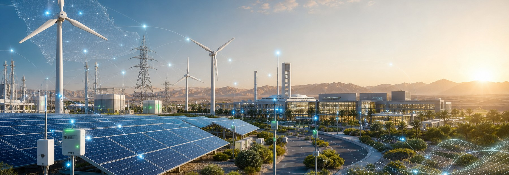
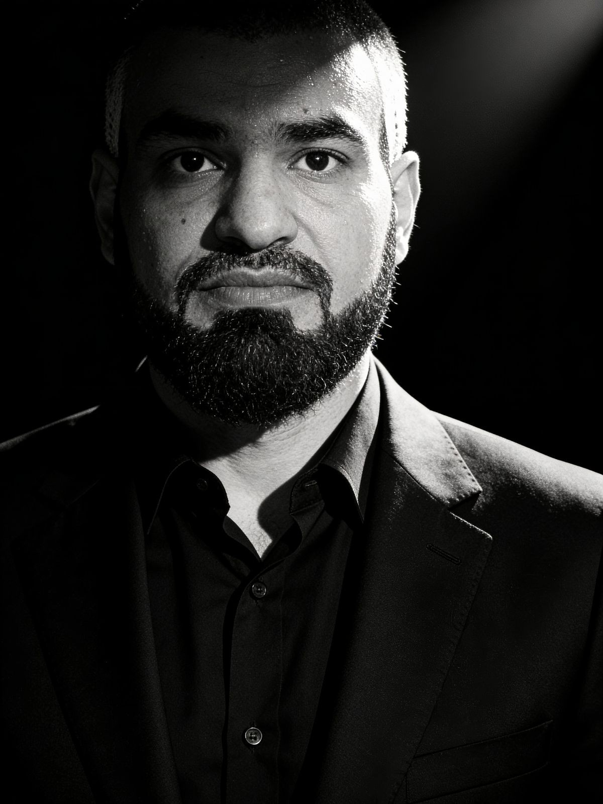
About
Dr. Musaad Alruwaili is an electrical engineering researcher whose work connects smart energy systems, secure device-to-device communication, IoT sensing, and renewable energy monitoring. He earned his PhD from the University of Toledo, with dissertation work on optimizing and securing 5G device-to-device communication.
His academic path includes electrical engineering degrees from Gannon University and doctoral research at the University of Toledo. His professional journey spans Advance Energy Company, Fluor Arabia, Saudi Electricity Company, and earlier communications maintenance work, giving his research a practical foundation in control systems, SCADA, electrical project engineering, and field infrastructure.
Research
Problem: Energy networks need resilience, visibility, and real-time decisions.
Method: Integrate sensing, communications, analytics, and automation.
Impact: More reliable grid operation and better demand-side intelligence.
Problem: Renewable sources introduce variability and monitoring challenges.
Method: Combine remote measurements with control and forecasting workflows.
Impact: Practical renewable integration for universities, utilities, and industry.
Problem: Power systems produce more data than conventional tools can use.
Method: Apply machine learning to prediction, diagnostics, anomaly detection, and optimization.
Impact: Better decisions across operation, maintenance, and planning.
Problem: Distributed assets need affordable, persistent, low-maintenance visibility.
Method: Design connected sensor architectures for energy and industrial environments.
Impact: Field-ready monitoring for laboratories, pilots, and remote assets.
Problem: Sensor networks must remain secure, efficient, and dependable.
Method: Study secure communication, device coordination, and network-aware data collection.
Impact: Stronger connected infrastructure for energy and smart-city systems.
Publications
Co-authored with Junghwan Kim and Jared Oluoch. The work proposes a security framework for 5G D2D communication that combines secure matching, privacy protection, AI-enhanced key generation, adaptive jamming, and MATLAB-based validation.
View on IEEE XploreCo-authored with Junghwan Kim and Jared Oluoch. The paper studies D2D power allocation and matching to improve 5G network efficiency, manage interference, and support reliable proximity-based communication.
View on IEEE XploreDoctoral dissertation supervised at the University of Toledo, connecting optimization, security, privacy, and resource allocation for next-generation device-to-device communication.
View dissertation recordCV and Documents
A concise academic and professional overview covering research focus, publications, education, industry experience, and collaboration areas.
Download CV PDFUse the publication profiles for citation records, indexed articles, researcher identifiers, and current scholarly activity.
Certificates, project summaries, speaking materials, and additional academic documents can be shared for collaborations or institutional requests.
Request DocumentsProjects
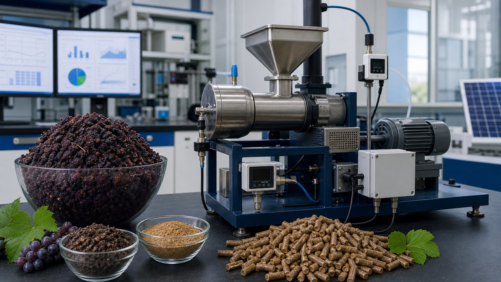
EPA-funded student design project at Gannon University, with Dr. Musaad Alruwaili listed as co-investigator. The project developed a prototype concept for converting agricultural residue, especially grape pomace, into renewable fuel through torrefaction and pelletization, with a remote command, control, and monitoring center.
In 2012, I had the opportunity to represent Gannon University at the U.S. Environmental Protection Agency's National Sustainable Design Expo in Washington, D.C. Our team participated in the EPA People, Prosperity and the Planet competition, known as P3, which brings university students together to present innovative engineering solutions for sustainability.
Our project was titled "Prototype of a Biomass Energy-Source Generator and Remote Control and Monitoring." The main idea was to develop a renewable-energy prototype that could convert agricultural waste, especially grape pomace, into a useful solid fuel through torrefaction and pelletization.
My role in the project focused on the monitoring and control system. I was assigned to create a LabVIEW program to monitor and control the machine. The program was designed to support real-time observation, machine control, and data monitoring for the prototype system. This work helped connect the physical machine with a user-friendly control interface, making it easier to operate, test, and demonstrate the system.
Participating in this national expo was an important experience in my engineering journey. I worked with a multidisciplinary team, helped present a renewable-energy technology to judges and visitors, and gained hands-on experience in automation, control systems, and sustainable engineering. Representing Gannon University in Washington, D.C. was a proud moment and a valuable step in my professional development.
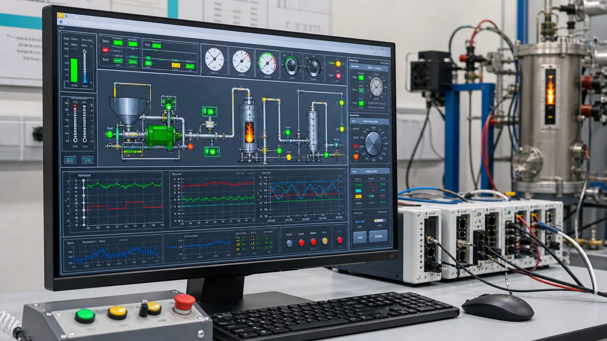
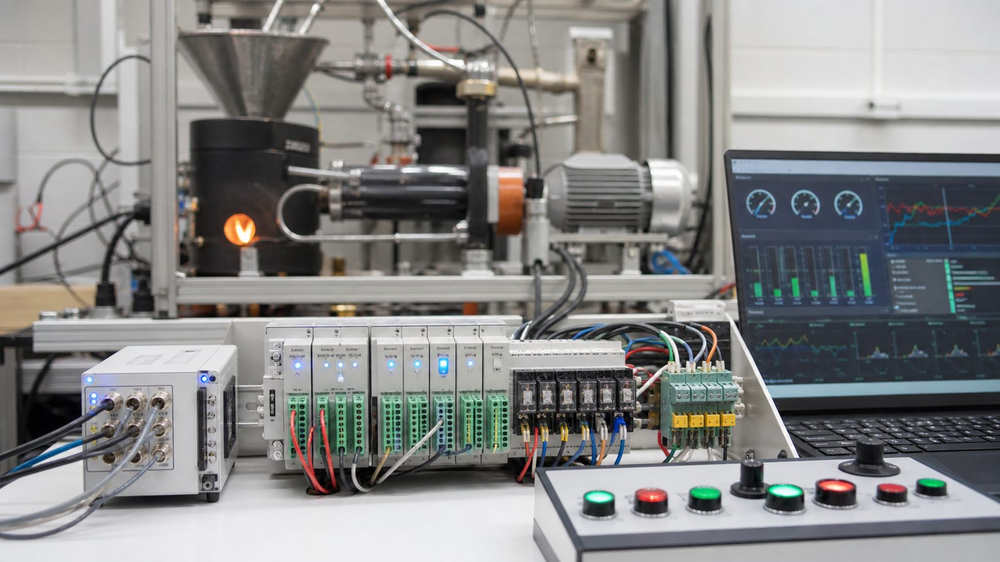
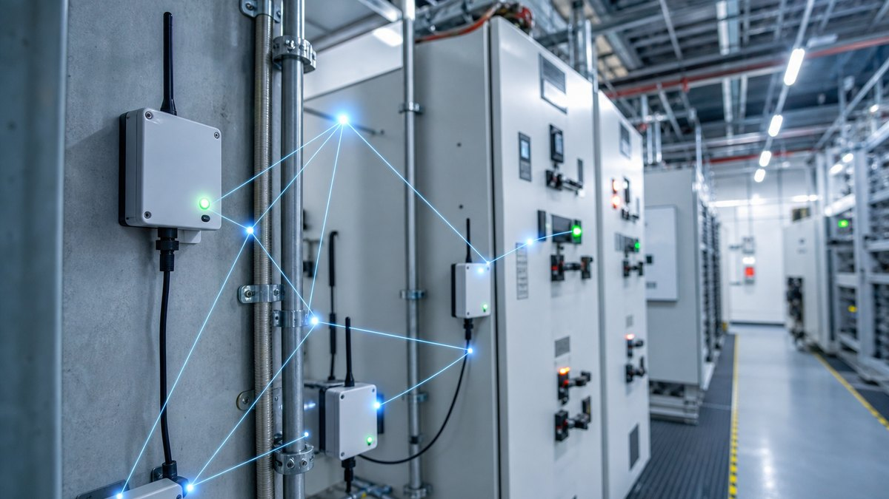
Wireless and IoT sensing for distributed energy assets, condition monitoring, and real-time decision support.
Machine learning concepts for forecasting, optimization, anomaly detection, and intelligent grid operation.
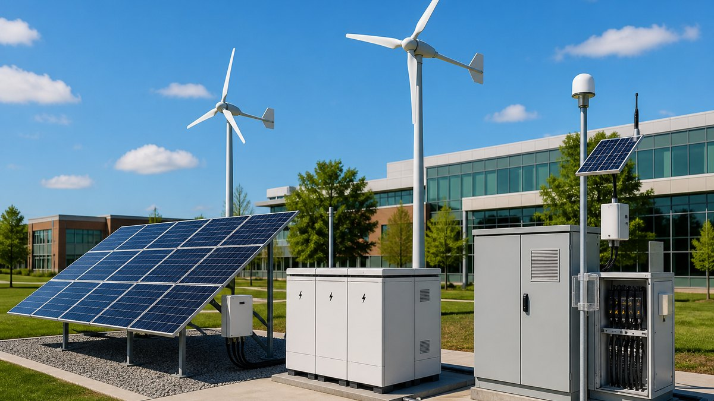
Monitoring and control strategies that help solar, biomass, and distributed generation operate with grid awareness.
Experience
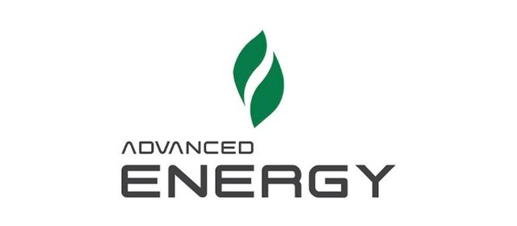
Nov 2025 - Present | Turaif, Saudi ArabiaCurrently serving as a Project Engineer at Advance Energy Company, contributing to engineering projects in the energy and industrial sector. This role builds on a strong background in electrical engineering, control systems, telecommunications, and project coordination.
The position reflects a continued commitment to applying practical engineering experience and advanced research knowledge to support reliable, efficient, and future-focused energy systems.
Worked as a Control Systems Engineer on major industrial projects, supporting engineering review, system inspection, technical coordination, and project quality activities. Responsibilities included reviewing DCS and SIS functional design specifications, participating in IFAT, FAT, and SAT activities, supporting EPC contractors, and ensuring compliance with client standards, technical specifications, safety requirements, and project documentation.
This experience strengthened expertise in industrial automation, control systems, system integration, technical documentation, and multidisciplinary coordination. The role also involved reviewing engineering documents such as datasheets, loop drawings, termination schedules, and P&IDs, as well as supporting technical clarification meetings, quality walk-downs, and mechanical completion activities.
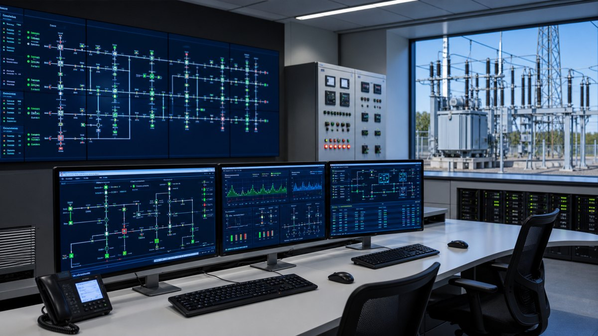
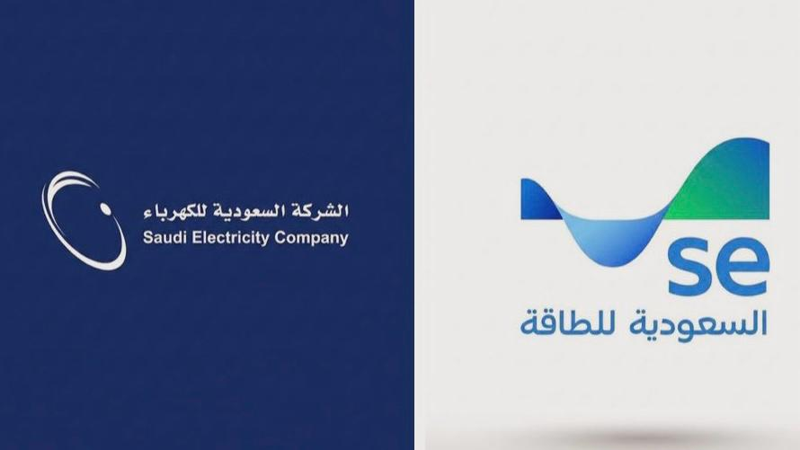
Sep 2006 - Sep 2007 | Al Jouf, Saudi ArabiaWorked as a SCADA Technician supporting critical electricity infrastructure and control system operations. Responsibilities included installation, calibration, inspection, and testing of SCADA-related equipment, including automatic switching and bus transfer systems.
The role also involved monitoring data communication systems, responding to system emergencies, and following approved change-control procedures. This position provided valuable hands-on experience in power system monitoring, field instrumentation, data communication, and operational reliability within the electrical utility sector.
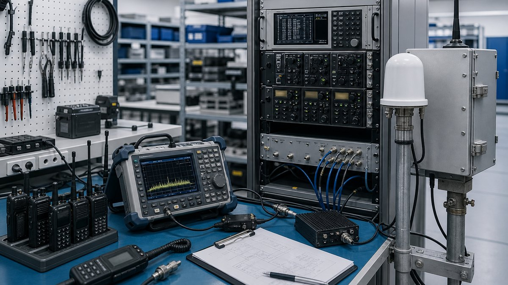
Mar 2005 - Sep 2006 | Tabuk, Saudi ArabiaServed as a Communication Technician, supporting communication services and equipment maintenance in a technical operations environment. Responsibilities included operating and maintaining communication links, repairing and maintaining test equipment, assisting team members, and supporting daily technical tasks.
This early technical experience helped build a strong foundation in telecommunications, equipment troubleshooting, teamwork, and field-based engineering support.
Musaad Alruwaili's professional background combines practical industrial engineering experience with advanced academic research in electrical engineering. His areas of focus include control systems, SCADA integration, industrial automation, telecommunications, 5G/6G communication systems, Device-to-Device communication, IoT systems, machine learning, and optimization for engineering applications.
His work connects real-world industrial systems with advanced research in intelligent communication, automation, and secure next-generation networks.
Education
Doctoral research focused on optimizing and securing 5G device-to-device communication, with emphasis on security, privacy, resource allocation, and intelligent connected systems.
Graduation moment as my advisor hooded me during the doctoral ceremony.
Academic work connected to electrical engineering and EPA P3 renewable energy research, including the biomass energy-source generator and remote monitoring project.
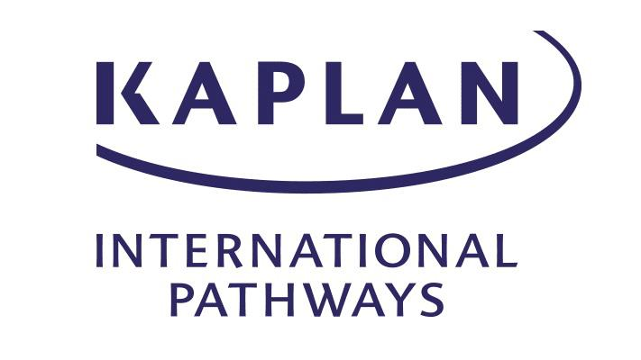
Strengthened academic English, graduate preparation, and communication skills before doctoral study in the United States.
Teaching
Blog
Distribution grids are becoming more dynamic as renewable generation, electric vehicles, and connected devices change the way power flows through local networks.
AI can help operators forecast demand, detect anomalies, prioritize maintenance, and respond faster to changing conditions. The real value is not replacing engineers, but giving them clearer signals, better predictions, and more confidence when decisions must be made quickly.
Adding renewable generation is only one part of the energy transition. A reliable system also needs visibility, coordination, and control.
Solar, biomass, storage, and distributed generation perform better when sensors, data acquisition, communications, and automation are designed into the system from the beginning. Monitoring turns renewable assets from isolated equipment into manageable grid resources.
Industry experience gives research a practical lens. Field work in control systems, SCADA, and communications makes technical problems feel concrete.
Doctoral research added another layer: formal modeling, validation, writing, and publication discipline. Moving between industry and academia strengthened my belief that useful engineering research should be rigorous, but also connected to systems that people operate, maintain, and improve.
A prototype becomes more useful when people can observe it, control it, and understand its behavior in real time.
Graphical control environments such as LabVIEW help engineers connect sensors, data acquisition hardware, control logic, and operator interfaces quickly. For student projects and lab prototypes, that connection can make the difference between a machine that works and a system that can be tested, demonstrated, and improved.
Media and Talks
Talks on 5G, D2D communication, privacy, and intelligent connected systems.
Professional sessions for students, researchers, and industry partners.
A dedicated space for future honors, grants, invited panels, and public media mentions.
Contact
Available for research collaborations, consulting, graduate supervision, industry partnerships, and speaking engagements.